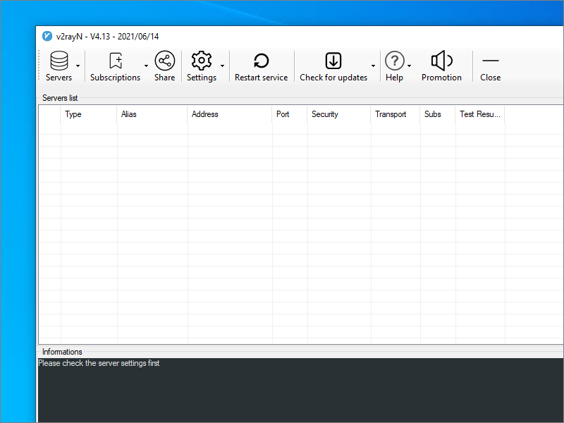

Quickly Set Up Trojan-GFW
Trojan-GFW is billed as an unidentifiable mechanism that helps you bypass the Great Firewall (GFW).
This quick set-up procedure for a Trojan-GFW server uses the johnrosen1 script from GitHub. It has been tested on Ubuntu 21.04. It should also work for recent versions of Debian.
After we’ve set up the server, we’ll test it with a Windows client.
1. Server
You need three prerequisites:
- a domain name
- a virtual private server (VPS)
- a DNS
Arecord pointing from the server’s fully qualified domain name to its IP address
SSH into your server as root.
Download and run the johnrosen1 script by issuing this concatenated command (it is a single logical line that may span multiple physical lines on your
display):
apt-get update && apt-get install sudo curl -y && curl -Ss https://raw.githubusercontent.com/johnrosen1/vpstoolbox/master/vps.sh | sudo bash
After some initial installs, the system language setting box appears.
Use the arrow keys on your keyboard to change the selection to English, if you prefer, and press Enter.
The VPS toolbox menu appears.
Leave the selection at the default install_standard. Tab down to the bottom where it says 选择完毕,进入下一步 (after selecting, go to the next step). Press
Enter.
The VPS install checklist appears.
Leave the selections at the defaults for Trojan, Netdata, and TCP Fastopen. (If you did want to change the selections, you could use the arrow keys to move and the space bar to toggle the selection.) Tab down to where it says 下一步 (next step). Press Enter.
You are asked for your server’s domain name.
Type the fully qualified domain name for your server. Tab down to where it says Ok. Press Enter.
The script is going to set up two passwords for you. You are asked to choose a password for the first user.
Enter a password for the first user (no special characters). Tab down to where it says Ok. Press Enter.
You are asked to choose a password for a second user.
Enter a password for a second user, or leave it blank for a randomly generated password. Tab down to where it says Ok. Press Enter.
You are asked how you want to validate your request for an SSL certificate for this server.
Leave the selection at HTTP, and press Enter.
The installation proceeds. You will see messages appear on your terminal. When the installation is done, the install success message appears.
Press Enter.
The Trojan links are displayed. They look like this:
trojan://abcde12345@fq.domain.name:443
Copy the trojan:// URLs to a Windows text editor such as Notepad. You will need the first trojan:// URL in a moment when you test the
server with a Windows client.
2. Windows Client
Trojan-GFW and Igniter clients are available for many platforms. In this tutorial, we will use Windows to test the server.
Open a browser on your PC.
If you visit your server’s fully qualified domain name in an ordinary browser, you will see the camouflage website.
Now in your browser go to https://github.com/2dust/v2rayN/releases. Identify the latest release of V2RayN. Right now it is 4.18.
Download the zip file v2rayN-Core.zip for the latest release.
Extract all files in the zip file.
Launch v2rayN.exe. If Windows Defender SmartScreen appears, click More info and Run anyway.
Click on the icon in the system tray (bottom right of your desktop) to bring up the V2RayN panel. Under Help, you can choose the language English or Simplified Chinese.
Copy the generated trojan:// URL from the script’s output into your PC clipboard.
In V2RayN do Ctrl+v, or select Servers > Import bulk URL from clipboard. Click OK.
Select the server’s row, and press Enter to start the connection. Look for connection messages in the box at the bottom of your V2RayN panel.
You can either specify system-wide proxying in Windows Settings, or you can specify proxying at the level of the individual browser. We will use the Firefox browser as our example.
Launch Firefox. From the hamburger menu, open Settings. Open the Network Settings. Configure Firefox like this:
- Select Manual proxy configuration
- SOCKS host
127.0.0.1 - Port
10808(note that this is the default in V2RayN, and not the common1080) - Select SOCKS v5
- Select Proxy DNS when using SOCKS v5

Click OK.
Now visit https://www.dnsleaktest.com in Firefox to check that your are using your remote proxy server and not your local PC to access the Internet.
Appendix A. Server Configuration File
The johnrosen1 script creates a server configuration file /usr/local/etc/trojan/config.json. It will look something like this:
{
"run_type": "server",
"local_addr": "::",
"local_port": 443,
"remote_addr": "127.0.0.1",
"remote_port": 81,
"password": [
"qwerty09876",
"i9orrxg9n"
],
"log_level": 2,
"ssl": {
"cert": "/etc/certs/fq.domain.name_ecc/fullchain.cer",
"key": "/etc/certs/fq.domain.name_ecc/fq.domain.name.key",
"key_password": "",
"cipher": "ECDHE-ECDSA-AES128-GCM-SHA256:ECDHE-RSA-AES128-GCM-SHA256:ECDHE-ECDSA-AES256-GCM-SHA384:ECDHE-RSA-AES256-GCM-SHA384:ECDHE-ECDSA-CHACHA20-POLY1305:ECDHE-RSA-CHACHA20-POLY1305:DHE-RSA-AES128-GCM-SHA256:DHE-RSA-AES256-GCM-SHA384",
"cipher_tls13": "TLS_AES_128_GCM_SHA256:TLS_CHACHA20_POLY1305_SHA256:TLS_AES_256_GCM_SHA384",
"prefer_server_cipher": true,
"alpn": [
"h2",
"http/1.1"
],
"alpn_port_override": {
"h2": 82
},
"reuse_session": true,
"session_ticket": false,
"session_timeout": 600,
"plain_http_response": "",
"curves": "",
"dhparam": ""
},
"tcp": {
"prefer_ipv4": true,
"no_delay": true,
"keep_alive": true,
"reuse_port": false,
"fast_open": true,
"fast_open_qlen": 20
},
"mysql": {
"enabled": false,
"server_addr": "127.0.0.1",
"server_port": 3306,
"database": "trojan",
"username": "trojan",
"password": "qwerty09876",
"key": "",
"cert": "",
"ca": ""
}
}
Appendix B. Client Configuration File
The V2RayN GUI stores its server configurations internally in a file named guiNConfig.json. V2RayN converts this to a standard V2Ray client
configuration file named config.json. It will look something like this:
{
"log": {
"access": "",
"error": "",
"loglevel": "warning"
},
"inbounds": [
{
"tag": "socks",
"port": 10808,
"listen": "127.0.0.1",
"protocol": "socks",
"sniffing": {
"enabled": true,
"destOverride": [
"http",
"tls"
]
},
"settings": {
"auth": "noauth",
"udp": true,
"allowTransparent": false
}
},
{
"tag": "http",
"port": 10809,
"listen": "127.0.0.1",
"protocol": "http",
"sniffing": {
"enabled": true,
"destOverride": [
"http",
"tls"
]
},
"settings": {
"udp": false,
"allowTransparent": false
}
}
],
"outbounds": [
{
"tag": "proxy",
"protocol": "trojan",
"settings": {
"servers": [
{
"address": "fq.domain.name",
"method": "chacha20",
"ota": false,
"password": "qwerty09876",
"port": 443,
"level": 1
}
]
},
"streamSettings": {
"network": "tcp",
"security": "tls",
"tlsSettings": {
"allowInsecure": false
}
},
"mux": {
"enabled": false,
"concurrency": -1
}
},
{
"tag": "direct",
"protocol": "freedom",
"settings": {}
},
{
"tag": "block",
"protocol": "blackhole",
"settings": {
"response": {
"type": "http"
}
}
}
],
"routing": {
"domainStrategy": "IPIfNonMatch",
"rules": [
{
"type": "field",
"inboundTag": [
"api"
],
"outboundTag": "api"
},
{
"type": "field",
"outboundTag": "proxy",
"domain": [
"geosite:google"
]
},
{
"type": "field",
"outboundTag": "direct",
"domain": [
"domain:example-example.com",
"domain:example-example2.com"
]
},
{
"type": "field",
"outboundTag": "block",
"domain": [
"geosite:category-ads-all"
]
}
]
}
}
Updated 2021-06-15